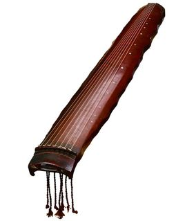

唐彩凤鸣岐七弦琴有钟磬金石之声，在唐琴中属上乘，可与故宫著名的唐琴“九霄环佩”相提并论
文物历史
唐彩凤鸣岐七弦琴制作于唐开元二年（714年）为“中华第一制琴师”四川雷威所斫。传说雷威常在北风呼啸的大雪天， 喝醉酒跑到深山老林，在狂风震树之时，听树的发声而选良材
清道光（1821—1850年）时，唐彩凤鸣岐七弦琴为定敏亲王载铨收藏。
八国联军入侵后，此琴流落民间，后为清末民初琴学泰斗、古琴学家杨宗稷重金收购。
民国二十年（1931年），杨宗稷去世。去世前，在学生虞和卿的介绍下，他的一批藏琴被转到了徐桴手中，其中就包括杨宗稷的唐彩凤鸣岐七弦琴。
1949年，徐桴去了台湾，收藏的21张古琴留在了家乡，后来因故只剩下14张，被后人捐到镇海文化馆，其中包括唐彩凤鸣岐七弦琴。
1953年，镇海文化馆将包括唐彩凤鸣岐七弦琴在内的14张古琴移交给了浙江省博物馆
文物特征
唐彩凤鸣岐七弦琴，为落霞式，通长124.8厘米，有效弦长116.3厘米，额宽16.3厘米，肩宽18.8厘米，尾宽12.5厘米，两肩之间最厚处厚度为5.4厘米， 岳山高1.3厘米，厚0.9厘米，承露1.5厘米，三四徽间为琴面最宽处。琴体浑厚，背面微凸，鹿角灰胎，从琴面漆灰剥落处看，漆灰较厚，为瓦灰， 应该是杨宗稷重修时刮去琴面原漆灰后上的瓦灰。琴背以栗壳色原漆为主，间朱漆，朱漆为修补色，琴面与侧面后加朱漆。琴背冰裂断兼小流水断，琴面断纹隐约可见， 在三、四、五徽部位，隐见类似梅花断的小圆圈断纹。“彩凤鸣歧”四字位于岳山下9厘米处开始，除「彩」字为5x3厘米外，其余三字约为4厘米x3厘米。龙龈4厘米， 龙池21.8 厘米 x2厘米，龙池、凤沼均为长方形，龙池两端在方圆之间，凤沼11厘米x2厘米，池沼内侧以木加厚，其厚1.5厘米。琴面弦路处全无断纹， 弦路二旁隐约可见极细牛毛断纹（杨氏谓为冰裂断纹）。底部遍布细密之冰裂断纹。琴底部自轸池开始有一道14.5厘米之红漆修补痕迹，另自凤沼开始至龙池有长达22厘 米之裂痕，自龙龈直凤沼有长达11.5厘米之裂痕。其纳音宽而不高，中间部份微凹。背部呈褐色，丝弦为后配。缺失琴轸，雁足，内侧冠托，内侧冠角连同部份琴面也已经 损坏（长达8厘米，宽处达4.2厘米）。 第1，2，3，4，5，6，9，10徽处隐约可见比现有徽大的圆形痕迹，可能是原有的徽留下的印痕。
文物价值
唐彩凤鸣岐七弦琴曾是定王府“行有恒堂”第一琴，又是九疑山人杨宗稷“半百琴斋”第一琴，并著录于《琴学丛书》中，又是“唐琴第一推雷公，蜀中九雷独称雄”的雷公琴 。唐彩凤鸣岐七弦琴是皇室大婚的嫁妆，是皇室流入民间的佳品
文物寓意
“彩凤鸣岐”原文出自《国语·周语》：“ 周之兴也，鸑鷟鸣于岐山；其衰也，杜伯射王于鄗。是皆明神之志者也。”三君注 ：“鸑鷟，凤之别名
唐彩凤鸣岐七弦琴有泛音、按音和散音3种音色，分别象征天、地、人之和合。形制命名的象征意义实际反映出儒家的礼乐思想及中国人所重视的和合性。 因为礼的作用是为了保障个体，使个性有所发挥；而乐是为了求“和”，其作用是与群体谐协。礼乐的同时并用可使个体和群体之间互相调剂，形成人与人之 间平和而合理的生活。所以礼乐的推行，是为了达到相辅相咸的和合性目的 。而从唐彩凤鸣岐七弦琴形制命名所借用的社会秩序、等级的名称来看，可见其制作形制寓有教化人伦的深意